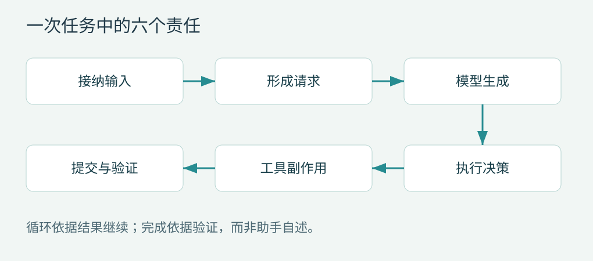

第 1 章 运行框架究竟控制什么
从一次修复任务拆出六个环节
设想一个路径过滤函数只判断字符串是否以工作目录开头。模型收到漏洞描述后，提出搜索函数名的工具调用。运行框架首先把工具名称映射到可执行实现，再验证参数，检查当前身份是否有权读取目录，把搜索结果转换成模型可理解的内容，随后发起第二次请求。模型提出修改时，相同的流程再次发生，只是执行器从搜索变成文件写入。
可以把这条路径写成：
用户意图 → 请求上下文 → 模型输出 → 执行决策
↓
完成报告 ← 验证结果 ← 历史更新 ← 工具副作用这里至少存在六个不同职责：保存任务与输入，形成请求，消费流式响应，控制工具执行，提交可恢复状态，决定是否继续。将它们全放进一个 while 循环当然能做出原型，但一旦加入用户中途纠正、并行工具和网络重试，就会产生相互依赖的状态。

模型、运行框架和环境
模型输出的是一项行动提议。即使工具参数符合 JSON Schema，它也可能指向不存在的文件、过期的分支或未经授权的服务器。运行框架负责检查和解释行动；执行环境负责真正读写文件、启动进程与联网。沙箱则限制这些环境动作可以触及的资源。把这几个概念分开，才能准确描述问题发生的位置。
例如“模型要求删除工作目录外的文件”属于不可信行动提议；“工具注册表根本没有删除接口”属于能力暴露控制；“删除接口拒绝目录外路径”属于应用级校验；“进程被操作系统阻止写入”属于环境级限制。它们可以叠加，但任何一层都不能自动替代其余层。
OpenAI 官方对 Codex harness 的说明也把会话状态、工具使用、流式执行和配置的审批/沙箱策略列在运行框架职责内。此处仅用它确认术语；后续实现结论仍以本地提交为准。OpenAI 官方说明
五个容易混淆的单位
| 单位 | 本书使用的含义 | 容易混淆的对象 |
|---|---|---|
| 会话 session/thread | 多次输入与执行的长期容器 | 单次 HTTP 请求 |
| 用户回合 | 对一次输入承担工作的阶段 | 一次模型采样 |
| 模型步 step | 一次模型请求及其工具处理 | 整个任务 |
| 尝试 attempt | 同一逻辑请求的一次实际尝试 | 已成功提交的消息 |
| 工具调用 call | 有唯一身份的一项执行请求 | 进程或工具定义 |
不同代码库对 turn 的命名并不一致。DeepSeek Harness 明确区分一个 turn 内的多个 step；Pi 低层循环则在每次助手响应与工具批次周围发出 turn_start / turn_end。因此不能只比较事件名称，必须比较它们覆盖的生命周期。D01P01
四个项目提供的观察角度
Codex 的工具计划会把声明给模型的接口与实际运行时一起组织起来，适合研究“工具可见性是否对应可执行能力”。DeepSeek Harness 的日志能够投影出模型历史，适合研究“上下文为什么能够被审计”。Pi 的低层循环接受转换与准备回调，适合研究“最小内核怎样承载丰富应用”。Claude Code 的工具定义同时包含执行、并发判断和呈现接口，适合研究“产品体验如何进入执行协议”。C03C11D07P02A04
这四种组织方式并不互斥。插件框架也需要明确的执行接口，小内核也能构建严格的安全边界，集成式产品也可以把模型访问抽成独立层。真正应比较的是变更传播范围：换一个模型、沙箱或工具实现，需要触及多少原本不相关的模块。
本章的设计判断
自建运行框架的第一份文档不应该只有功能清单，还应该明确谁拥有状态、谁能够执行副作用、谁能够决定继续。最简单的验收方法是回答三个问题：用户点击停止后哪个组件负责终止进程？模型请求失败后哪个组件判断是否能重试？进程重启后哪个组件知道哪些动作已经发生？
如果三个问题都只有“主循环处理”这一种回答，需要继续划分职责。不是为了增加抽象，而是为了让每种故障都有可定位的处理者。